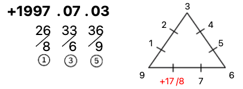
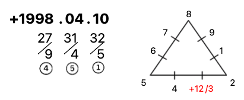
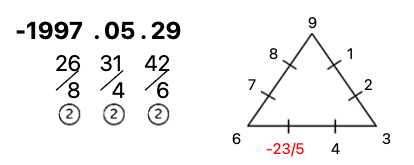

STUCK IN LOVE?
缺乏感情經驗，與異性相處時常受挫卻找不到原因
面對情感問題，找不到可信任、能夠提供可靠建議的討論對象
不知道自己的優勢在哪裡，到底要如何吸引異性
覺得自己無法在感情上做出好的抉擇，總是遇見不對的人
答案，可能就藏在你的生日數字裡。
先免費算我的主命數 ↓EMOTIONAL CODE
用數字，看見更真實的自己。
範例：1993 / 02 / 05（單月單日需補 0）
Step 1：拆解
年：1+9+9+3 = 22 月：0+2 = 2 日：0+5 = 5
Step 2：相加
總和：22 + 2 + 5 = 29
Step 3：化約
將總和加至個位數：2+9 = 11 → 1+1 = 2
主命數寫法為 29/11/2，主修數字為 2
陽曆 ・ 獨立運作的你
社會化與工作表現。主動給予想法與行動的陽性特質。
農曆 ・ 深層渴望與恐懼的你
親密關係與內在需求。被動、期待別人給予光芒的陰性特質。
限額 5 位
價值 NT$5,000 的深度報告，包括兩人前世今生關係分析和個性分析。
LOVE SCRIPTS
點選數字，看你的戀愛劇本與角色
Number One
1 號劇本
LOVE NO-GO ZONE
看見你的情感課題 × 讓愛更靠近
1 領導與衝動
被忽略最火大、不要掌控我、被激到就超固執、別說服我了
2 協調與溫和
太直接我會怕、不要逼我做決定、被背叛、你怎麼還不懂我
3 創意與好奇
一成不變超無聊、看我天真就騙我😭、被誤會、被忽視
4 穩定與務實
驚喜會嚇死我、……太不實際了吧、不要偷看我手機、被打破原則或規範
5 自由與熱情
不要限制我、沒心就不愛了、到處留情、心結拖著不說開
6 慈愛與責任
怎麼只有我在付出？眼睛長在頭頂、你的愛不能比我多、你太不上進了
7 直覺與靈性
不特別又沒創意、窩在自己的小世界裡、這個你講過了、要說不說很煩欸
8 商業與權威
對我冷嘲熱諷、無視我的成就、把我給的東西送別人、沒意願就不要浪費我的青春
9 博愛與夢想
這個我沒興趣、鑽牛角尖最討厭了、沒禮貌不尊重我、沒睡飽又趕著出門
WHAT YOU'LL GET
讓數字，成為你的愛情助攻。
加入 LINE 官方帳號 @datenami，取得課程報名資訊
ABOUT NAMI
看見數字，看見愛，也看見更完整的自己。
娜米 Nami
戀愛小秘書 ・ eros 主題派對 創辦人
我是娜米，A 型雙子座，美國丹佛大學 MBA 碩士，是「戀愛小秘書」與「eros 主題派對」的創辦人。
在海外留學期間，我發現外國人真的熱愛交友，社交生活豐富，不管是跟人攀談、搭訕都很自然，很容易就散發自信跟魅力。相比之下，台灣上班族的生活圈比較小，私人社交活動也較少，較難認識新朋友與異性。
所以我決定創辦「戀愛小秘書」與「eros 主題派對」，幫助大家更認識自己，找到自我魅力，透過真實的互動找到對的另一半。
4,000+
位未婚男女配對成功
10 萬+
eros 主題派對實名會員
200 萬
尋夢園聊天室會員
10 年+
公司經營經驗
「娜米是一個非常貼心的人，她親近人、不做作，她用專業的態度和專注的精神，為每一個人提供最好的服務。」
「娜米提供了許多有價值的服務，從活動媒合到專業教練顧問諮詢，過程感受到她的在乎與耐心，提供客戶在幸福路上全方位的指引。」
「我真的被她的服務感動了。她非常用心地為每一個人提供最好的服務，細心地聆聽每個人的需求和願望。」
「作為一個網路創業家，我對娜米的經營的用心和細心深表敬意。娜米不斷努力鑽研和優化自己的服務。」
AS FEATURED IN
中視《網路溫度計》數位時代《戀愛會社》節目主持Facebook #SheMeansBusinessGirls in Tech資策會 IDEAS政大・中原・高雄科大
代言經歷 擔任共享電動機車代言人，身兼廣告模特兒，拍攝形象影片廣告、靜態看板廣告，並參與記者發表會。
主持經歷 曾主持 Facebook 在台灣舉辦的大型 Developer Circle 活動、資策會 Ideas Show 競賽，以及無人機、機器人、智慧音箱等大小型產品發佈記者會。
NEXT STEP
上完課，想針對你和他的狀況深入解析？一對一線上諮詢，透過生日密碼探討專屬於你的戀愛藍圖：找到你單身、總是遇不到對象的原因，以及如何追到喜歡的對象。無論遇到什麼戀愛難題，娜米都會陪你瞭解現況，給你最適合自己的建議。
另有「彩虹數字諮詢」（NT$2,000 ／ 60 分鐘），可諮詢自我成長、親子、職涯等主題。
透過戀愛數字精準的測算，揭示未來對象的出現時間、地點和場合，讓你不再錯過真愛。
他是怎麼看我的？他到底有沒有喜歡我？透過全面合盤分析，洞悉彼此的契合度與發展性。
教你發揮個人優勢，建立強大的戀愛吸引力；了解對方的喜好，設計互動小細節，輕鬆吸引對方。
找對象，要先了解自己適合怎麼樣的人。人有緣分，卻沒有絕對的戀愛法則；準備好自己，運用吸引力法則，宇宙會帶來適合的人。
HOW IT WORKS
一對一 LINE 通話一小時，會後附上專屬報告書
並告訴我以下資訊：
在娜米的預約時段中，選擇您可以通話的時間。確認後，我會傳送 LINE 通話邀請給你。
透過一對一的對談、診斷與分析，找出你在情感模式上的盲點，對症下藥給予最適合的建議。
會談結束後，為你整理一份專屬報告書，內容包括：
P.S. 計算戀愛數字密碼需要提供自己的陽曆和農曆生日，知道出生時分可以看到更多細節；若有對象，也可一併提供對方的生日。
TESTIMONIALS
她們用數字看懂自己，也讓愛更靠近。
Becky
位格 9 ・ 流年 +17/8
感謝娜米，我對自己有了更深的認識，發現了潛在的優勢，也學會了更有效地與人溝通。現在的我在人際關係中更加融洽，感謝娜米老師帶給我這股正向的力量，不僅是學到自我探索，更是獲得了寶貴的人生觀念。遇見娜米老師真的是一場奇妙的緣分，解開了我多年的疑惑。

Airel
靈魂等級 1
經歷娜米的諮詢，我的人生得到了翻天覆地的改變。我發現了自己內在的力量，學到了解決感情問題的方法，也更加自信地與他人交流。娜米老師的指導不僅讓我找到了合適的對象，還幫助我解決了多年的心結，讓我重拾人生的信心。

Lina
感情主修 6
這真的是一場啟發之旅。娜米的戀愛數字密碼，不僅讓我更加了解自己，還讓我在感情中更加得心應手。透過她的諮詢，我找到了適合我的對象，解答我的戀愛困擾。感謝娜米老師的專業指導，讓我在感情和人生中都有了更多的收獲。

艾瑪
2026/03/08
★★★★★
謝謝娜米的彩虹數字諮詢，很有專屬個人化、明白與清透的感覺，了解到我的劇情可以怎麼展開，依據自己想要的目標怎麼走。娜米很專注聆聽，有被同理和同在的感受，啟發我的思考和覺察。讓我和先生彼此更了解與理解，開展更棒的親密關係。
波利
2026/07/15
★★★★★
謝謝娜米在我脆弱的時刻出現，有種汪洋中遇到一艘船可以讓我靠著的感覺。在對談之前，我的狀態充滿沮喪、難過、失望和茫然以及深深的自我否定，沒想到聊的這一小時結束後，我就舒服很多，有種找到方向，知道怎麼給自己力量的感覺，能量真的差好多，開始有希望，也覺得期待。謝謝娜米的引導，我感受到同理、也受到滿滿的允許和支持。
悠悠
2026/10/29
★★★★★
透過娜米的諮詢分享了很多我原本沒注意到的個人優勢，除了協助我了解自己以外，娜米也提供許多實境運用的、適合我數字能量的脱單好方法，諮詢後非常踏實！
FAQ
可以知道自己的感情優勢與缺點、看見該注意的個性、發覺自己的特質、知道自己跟對方關係、知道隔壁學長的個性、了解怎麼追喜歡的學妹……等等。
兩者同樣都以西元出生年月日來解讀我們的生命密碼。但是彩虹數字除了最重要的主命數以外，還能解答其他階段出現的所有數字、更加入農曆日期來做剖析，讓我們更了解能量如何流動與影響，看到戀愛的無限潛能。
只要是動物、有出生年月日都可以算！可以透過數字知道自己的戀愛成功途徑、了解自己此生的感情目標。
當然可以，如果有對象的出生年月日也可以看兩人感情數，了解兩人緣分、得到最佳互動方法！
娜米會透過官方 LINE 與您通話一小時，記得加入娜米的 LINE（@datenami）並提供您的出生年月日（陽曆與農曆，知道時分更好）、想問的問題讓娜米老師知道！
可以，只要有年月日就可以算！時、分則是可以看到更細節的潛意識、以及解答青少年時期的戀愛模式。
可以。上完課後若想針對自己或對方的狀況深入解析，可透過 LINE 官方帳號 @datenami 預約一對一諮詢。
課程報名資訊與費用，請加入 LINE 官方帳號 @datenami 詢問。